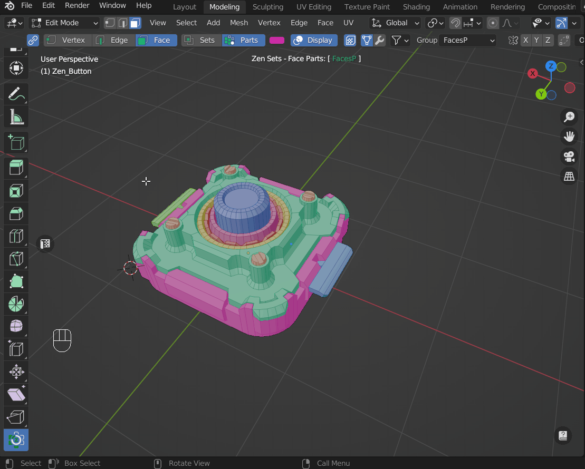
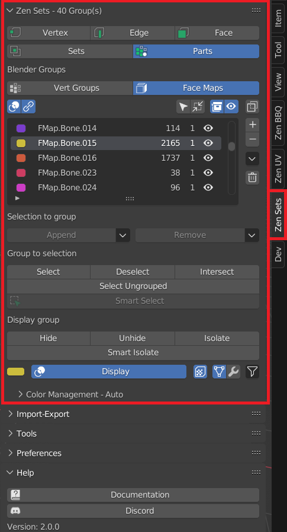

Zen Sets N-Panel
N-Panel contains all Zen Sets addon functionality and consits of Main, Tools, Preferences and Help collapsible subpanels.
NOTICE! This panel is available only in edit mode, when the object being edited as a mesh

Main Subpanel
Contains all basic functionality for managing Zen Sets

Active Zen Sets Element Switch
Gives an option to change type of mesh geometry (vertex, edge or face) that can be assigned to a group

NOTICE! Zen Sets active element is synchronized with the Blender mesh selection mode

Active Zen Sets Mode Switch

Sets mode
One element (Vertex, Edge, Face) may be assigned to more than one group and only active group is displayed in the viewport

Parts mode
One element (Vertex, Edge, Face) may belong only to one group and all groups or active group can be displayed in the viewport

Groups List

Contains the following information:
- Group Color
- Group Name
- Mesh Elements Count
- Objects Count
Selection to group
Append
Appends selected Elements to selected Group

Remove
Removes selected Elements from selected Group

Group to selection
Select
Selects Elements of selected Group - Clear selection - an option to clear previous selection

Deselect
Removes selected Group Elements from mesh selection

Intersect
Selects Group Elements intersected with mesh selection

Smart select
Depends on selected mesh elements and has the next behaviour: - Select Group by selected Elements in Viewport If mesh selection belongs to Zen Sets group, all group elements are selected and other elements are deselected - Deselect Active Group and select Elements that does not belong to any group If mesh selection does not belong to any Zen Sets group, the active group is deselected and all mesh elements that don’t have group metainformation are selected
Display group
You can highlight the active group in Sets mode or all groups in Parts mode. Also you can hide, unhide active group or hide elements that don’t belong to the active group

Hide
Hides active group
Unhide
Unhides active group
Invert hide
Hides elements that don’t belong to active group
Display
Toggles the display of the active group in Sets Mode or all groups in Parts Mode

Tools Subpanel

Help Subpanel